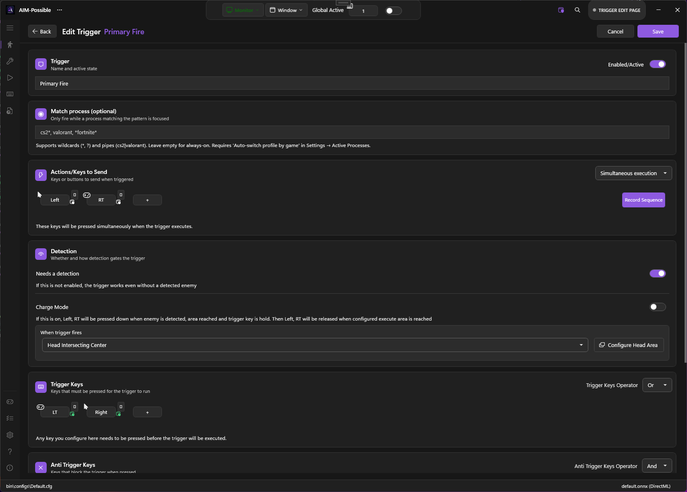
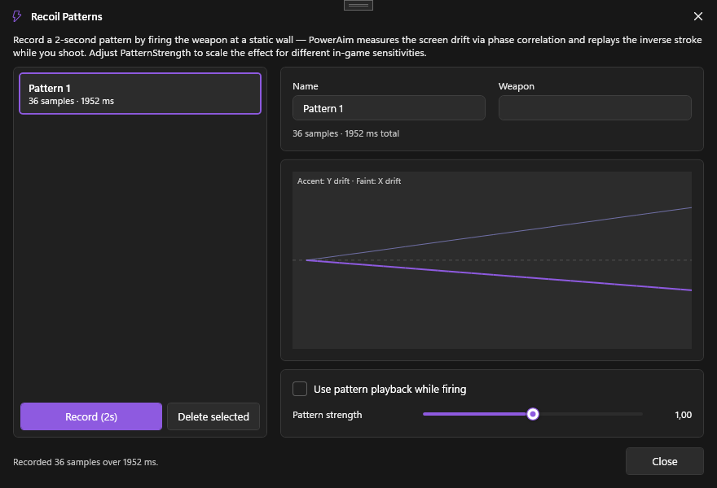
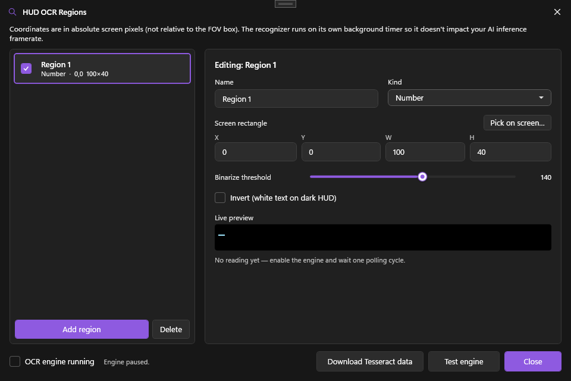
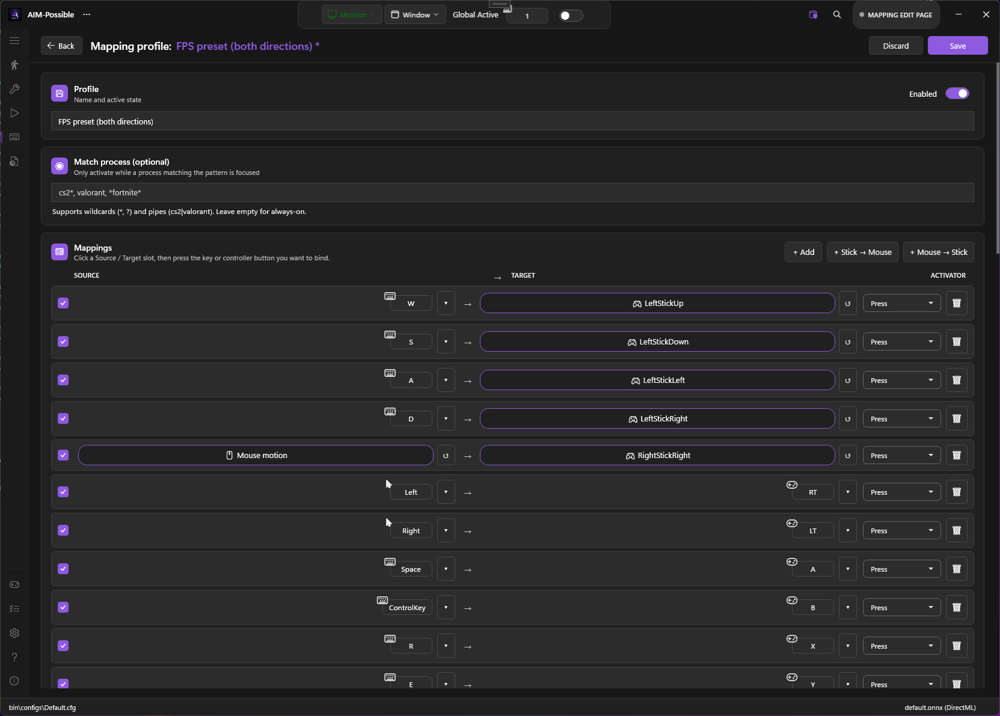
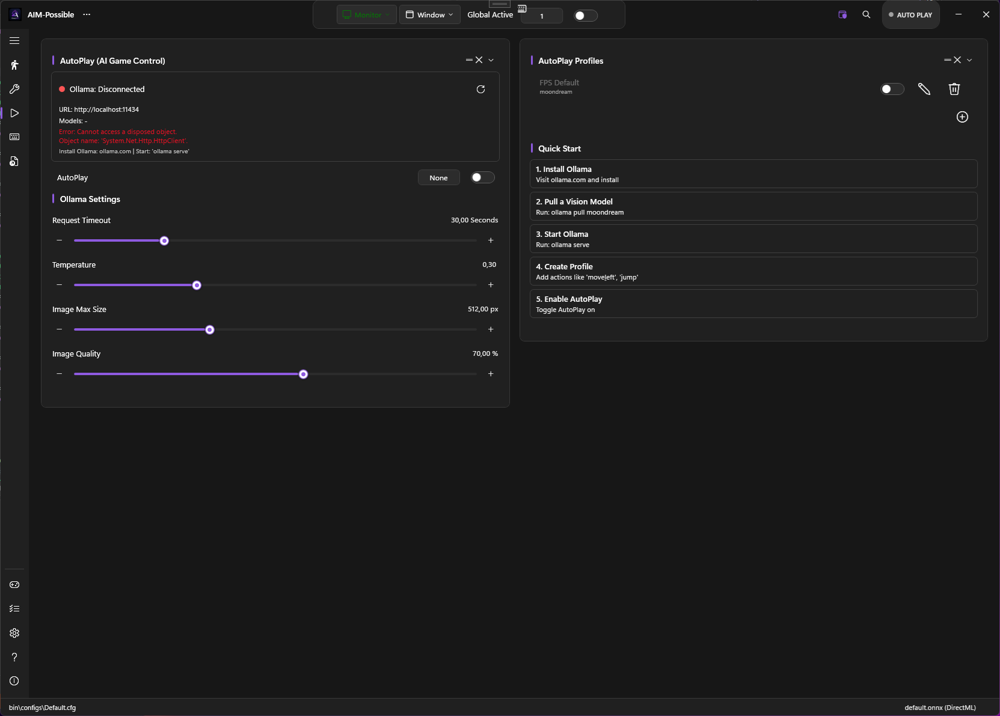
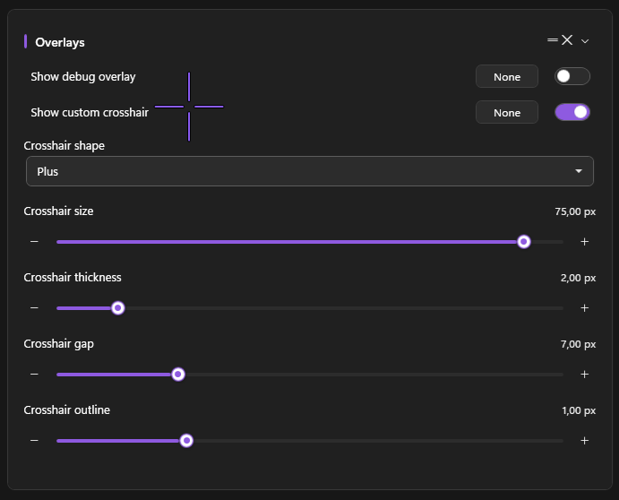

Everything PowerAim does.
A full tour of the toolkit — the aim pipeline, triggers, anti-recoil, OCR, gamepad support, the LLM AutoPlay system and the overlays. Each section links to the in-depth guide.
Smart aim & tracking
The core of PowerAim. A YOLOv8 model detects targets each frame and a tracking pipeline turns that into smooth, stable aim — not the jittery snap most tools settle for.
- Persistent tracking — a SORT-style tracker keeps a stable identity per target and coasts through dropped detection frames, so the aim doesn't fling away when a box flickers.
- Switch hysteresis — won't flip-flop between two enemies; a challenger has to stay clearly better before the lock moves.
- Adaptive smoothing — a 1€ filter plus a frame-rate-independent damped controller: calm when the target is slow, responsive on flicks.
- Aim region & profiles — draw exactly where in the target to aim, optionally a randomized point, and save it all as switchable per-game / per-weapon profiles.

Conditional triggers
Fire (or press any key sequence) the moment a target is lined up — gated by exactly the conditions you want.
- Head-area intersection — only fire when the crosshair sits inside a region you draw on the detected body.
- OCR condition trees — combine HUD reads with AND/OR logic, e.g. (ammo > 5 OR mag = full) AND weapon contains "AK".
- Multiple triggers, each with its own keys, sequential sends, delays, cooldowns and per-process scope.

Anti-recoil profiles
Tame spray patterns with profiles that activate by hotkey or automatically per weapon.
- Recorded patterns — capture a weapon's real recoil and replay it, with optional looping for held sprays.
- Image-based compensation — phase-correlation that pushes the view back down as it kicks.
- Per-profile activation — bind a key, or auto-switch via an OCR weapon-name match.

OCR HUD reader
PowerAim can read your HUD — ammo, health, weapon names — and feed that into the rest of the system.
- Typed regions — mark areas as Number, Health or Text, with color-aware preprocessing for stylized (even coloured) HUD fonts.
- Drives everything — gate triggers, auto-disengage aim (knife out, not scoped), or auto-switch aim & recoil profiles.
- Condition trees with the same AND/OR builder used by triggers.

Gamepad aim & mapping
Full controller support in both directions — play pad games with a mouse, or play KB-only games with a pad.
- Aim on a virtual stick — route aim onto a virtual Xbox controller through ViGEm.
- Two-way mapping — map controller ↔ keyboard/mouse with per-profile hotkeys, presets and live visual controller + keyboard diagrams.
- Hidden controllers — keep a physical pad from reaching the game while PowerAim drives the virtual one.

LLM-driven AutoPlay
An experimental automation layer that hands the current game state to a local language model and lets it act.
- Context-aware — detections plus OCR readings are summarized and sent to a local Ollama model.
- Profiles & actions — define the moves it can make, with cooldowns and an action history.
- Learning mode — capture what works and feed it back in. Everything runs locally.

Crosshair, FOV & ESP overlays
See exactly what the AI sees, and dial in the field of view, with a stack of optional on-screen layers.
- Crosshair & FOV — a configurable reticle and a FOV circle that also sizes the scanned region.
- ESP / detected players — draw detection boxes, confidence and the trigger head-area, via multiple drawing backends.
- Debug overlay — live input visualization to see the synthetic mouse/stick moves in real time.

And a lot more under the hood
Pretty much the whole toolbox — grouped by what it touches.
Aim profiles
Save complete aim setups and switch them by hotkey or OCR weapon-match, per game or weapon.
features/aim-assist →Aim region picker
Draw exactly where inside a target to aim — the same visual editor the triggers use.
features/aim-assist →Random aim point
Aim at a randomized point inside the region per engagement for a more human feel.
features/aim-assist →Aim-disengage rules
Pause aim automatically when an OCR condition holds — knife out, not scoped, low ammo…
features/ocr →Target classes
For multi-class models, choose exactly which classes count as a target.
features/triggers →Detection masks
Blank out HUD regions (minimap, kill-feed) so the model never hallucinates targets there.
features/detection-masks →Detection area
Target closest-to-crosshair or closest-to-mouse, with a confidence threshold.
configuration →Prediction methods
Optional motion prediction — Kalman, Shalloe and WiseTheFox — for leading moving targets.
features/aim-assist →Aim presets
Start from a built-in feel — smooth tracking, snappy flick, high-DPI precise, humanized or legacy — then fine-tune.
features/aim-assist →Tunable tracking
Every tracker knob is exposed — association IoU, alpha/beta gains, switch margin, target max-age and an on-target deadzone.
features/aim-assist →Adaptive lead-time
Lead the shot by target velocity, with an optional Kalman lead that scales with how fast the target is moving.
features/aim-assist →Charge-up triggers
Hold-to-charge mode presses and holds until the target lines up, then releases — for bows and charged shots.
features/triggers →AND/OR trigger keys
Combine several trigger keys and block keys with per-set AND/OR logic.
features/triggers →Two-stage intersection
Separate begin and execution checks — line up loosely to start, then fire only when the head is dead-centre.
features/triggers →Fire-except conditions
An anti-condition tree fires everything except when the HUD says otherwise — reloading, downed, menu open.
features/triggers →Disable-recoil hotkey
A dedicated key force-disables anti-recoil mid-fight without opening the UI.
features/anti-recoil →OCR recognition tuning
Opt-in passes for tricky HUDs — colour-channel grayscale, letter→digit fixup, strict parsing, Otsu threshold, DPI hint and sticky-last-valid.
features/ocr →Per-region OCR setup
Mark each region as text, number or health, set a binarization threshold and invert, and pick it right on screen.
features/ocr →Bundled OCR engine
Tesseract is built in — it auto-downloads its language data and has a one-click test button.
features/ocr →FOV & dynamic FOV
A field-of-view circle that also sizes the scanned region, with a hold-key dynamic FOV and custom color.
features/fov-overlay →Crosshair overlay
A configurable on-screen reticle, independent of the game's.
features/crosshair-overlay →ESP / detected players
Draw detection boxes, confidence and the trigger head-area via several drawing backends.
features/crosshair-overlay →Debug overlay
Live input visualization — watch the synthetic mouse / stick moves in real time.
features/debug-overlay →Crosshair styles
Six reticle shapes with size, thickness, gap and outline — plus a detection flash that tints the crosshair when a target appears.
features/crosshair-overlay →ESP detail
Toggle confidence labels, tracer lines and box sizes, and recolour detected players to taste.
features/crosshair-overlay →Overlay backends
Pick the rendering path — WPF, DrawingContext, desktop-DC or a separate overlay window — to suit your game.
features/crosshair-overlay →Mouse input methods
Several synthetic-mouse backends plus Razer, Logitech G HUB and ddxoft driver paths.
features/mouse-input-methods →Movement paths
Lerp, Exponential, Bézier, Adaptive and Perlin-noise cursor paths for natural motion.
features/mouse-input-methods →Mouse jitter
Optional randomized jitter on the synthetic mouse for extra humanization.
features/mouse-input-methods →Gamepad aim output
Route aim onto a virtual Xbox controller via ViGEm for pad-driven games.
features/gamepad-aim →Hidden controllers
Keep a physical pad from reaching the game (HidHide) while PowerAim drives the virtual one.
features/hidden-controllers →Recoil pattern recorder
Record a weapon's real recoil into a reusable pattern for anti-recoil playback.
features/recoil-patterns →Humanized fire delay
Randomize the auto-fire click timing so bursts don't fire on a perfect clock.
features/triggers →Driver auto-install
One-click install of the helpers it can use — Razer, Logitech G HUB and ddxoft mouse drivers, plus vJoy and HidHide.
features/mouse-input-methods →Gamepad backends
Output through ViGEm (Xbox) by default, with vJoy, XInput and an internal mode also available.
features/gamepad-aim →Activators & layers
Each mapping can fire on press, long-press, double-tap, toggle or pulse — with an optional modifier button for shift-layers.
features/controller-mapping →Stick-feel tuning
Per-profile deadzone, anti-deadzone, response curve, stick→mouse exponent, Y-invert and dual sensitivities.
features/controller-mapping →Mapping presets
Ready-made layouts — FPS in either direction, driving, and a controller-as-mouse mode for accessibility.
features/controller-mapping →Gamepad diagnostics
A live panel shows the XInput slot map and sender status, fires a test trigger pulse, and pops out a full tester.
features/gamepad-aim →Trigger thresholds
Set how far the analog triggers must travel before LT/RT count as pressed.
features/controller-mapping →Capture backends
Fast DXGI Desktop Duplication with an automatic GDI fallback, plus per-process capture.
configuration →Monitor & source select
Pick which monitor or window to capture, with a live preview picker.
configuration →Downloadable models
Browse and one-click download community ONNX models straight from the app.
getting-started →Dynamic model sizes
Run dynamic-axis models at 160–640+ to trade accuracy for speed.
getting-started →GPU device selection
Run inference on a chosen adapter — keep it off the GPU the game uses.
configuration →Benchmark & FPS cap
Built-in performance benchmark and an inference FPS cap to balance load.
features/session-stats →Replay buffer
A rolling buffer that can save the last seconds around a moment to disk.
features/replay-buffer →Session stats
Live FPS, inference time and detection counters while you play.
features/session-stats →Training-data capture
Auto-save capture frames and YOLO labels while you play to bootstrap your own dataset.
models/training-your-own →Model input override
Override the input resolution for dynamic-shape models to trade accuracy for speed.
requirements →In-app build switch
Switch the whole app between the DirectML and CUDA build from inside it — it downloads and swaps for you.
requirements →Per-game auto profiles
Auto-switch aim / recoil / mapping profiles based on the focused process.
configuration/per-game-profiles →Configs
Save, load and download configs; swap a whole setup per game in one click.
configuration/config-file →Keybinds & hotkeys
Global, rebindable hotkeys for every toggle, profile and tool.
configuration/keybinds-hotkeys →Hide UI from capture
The whole PowerAim window is excluded from screen capture & recorders.
configuration →Theme & accent color
Light / dark with a custom accent, and a separate accent while globally active.
configuration →Setup wizard
A guided first-run wizard that walks you through models, capture and binds.
getting-started →9 languages
Fully localized in English, German, Spanish, French, Italian, Russian, Turkish, Ukrainian and Chinese.
advanced/localization →100% local & free
No telemetry, no key system, no paywall. Source-available under PolyForm Noncommercial.
advanced/source-available →Custom layout
Drag the settings cards into the order you like and hide the ones you don't — a pill brings them back.
configuration →Instant search
Ctrl+F searches every setting and section, then jumps to and flashes the matching control.
configuration →Hotkey safeguards
Optionally require Global-Active before hotkeys fire, with an on-screen notice each time a key flips a toggle.
configuration/keybinds-hotkeys →Smart launcher
The launcher starts the app under a randomized executable name on each run.
getting-started/installation →Installer mode
With no build present it becomes an installer — pick a version, opt into the CUDA build and choose a folder.
getting-started/installation →Built-in updater
Checks for new releases and updates in place, preserving your configs.
getting-started/installation →Releases & download stats
The About page lists every GitHub release with its per-asset download counts.
getting-started →Ready to try it?
Grab the installer or a portable build and follow the quick-start. It's free and runs entirely on your machine.